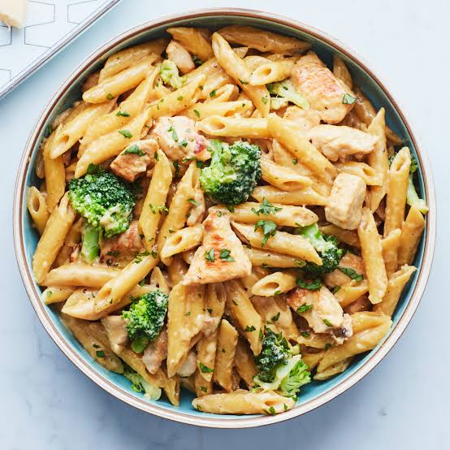

Simple pasta is a warm, classic comfort dish made by boiling dried or fresh noodles—like spaghetti, penne, or fusilli—until tender. Tossed simply with olive oil or butter, fresh garlic, salt, pepper, and a sprinkle of Parmesan cheese, it offers a rich, satisfying, and comforting flavor with minimal effort. Ready in under 15 minutes, it works perfectly as a fast standalone meal or a versatile base for your favorite sauces and toppings.